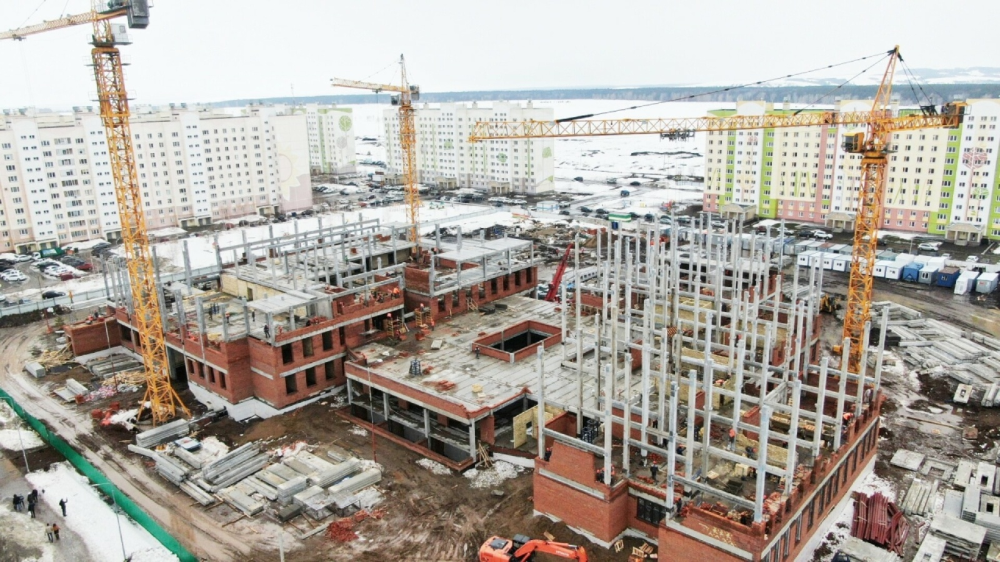

Влияние образования на социально-экономическое развитие.

Образование в Нижнекамске — это не сфера услуг, а один из главных драйверов развития. Его влияние можно увидеть в трёх измерениях.
Экономическое влияние
Благодаря тому, что в 1966 году открылся энергостроительный техникум, заводы получили своих техников, лаборантов и механиков. Сегодня политехнический колледж продолжает готовить кадры для «Нижнекамскнефтехима» и других предприятий. Это снижает потребность в дорогом привлечении специалистов из других регионов. Кроме того, профильные инженерные классы в школах питают колледжи и местные филиалы вузов абитуриентами.
Социальное влияние
Школы и детские сады стали центрами притяжения для семей. Как только в 1962 году открылась школа №1 и сад «Красная шапочка», к строителям начали приезжать жёны и дети — временный посёлок превратился в город. Сегодня наличие хорошей школы — главный критерий при выборе района для покупки жилья. А музей первостроителей в колледже воспитывает уважение к истории и труду старших поколений, укрепляет городскую идентичность.
Демографическое влияние
Качество образования напрямую влияет на то, остаётся ли молодёжь в Нижнекамске или уезжает. Рост интереса к инженерным специальностям — хороший знак. Но системные проблемы (нехватка учителей, устаревшая база) толкают лучших выпускников в Казань или Москву. Город должен бороться за свои таланты.
Общий вывод:
За 60 лет влияние образования на развитие Нижнекамска — безусловно положительное. Без выстроенной с нуля системы школ, техникумов и колледжей город не смог бы привлечь постоянное население, обеспечить заводы кадрами и стать одним из ведущих промышленных центров Татарстана.